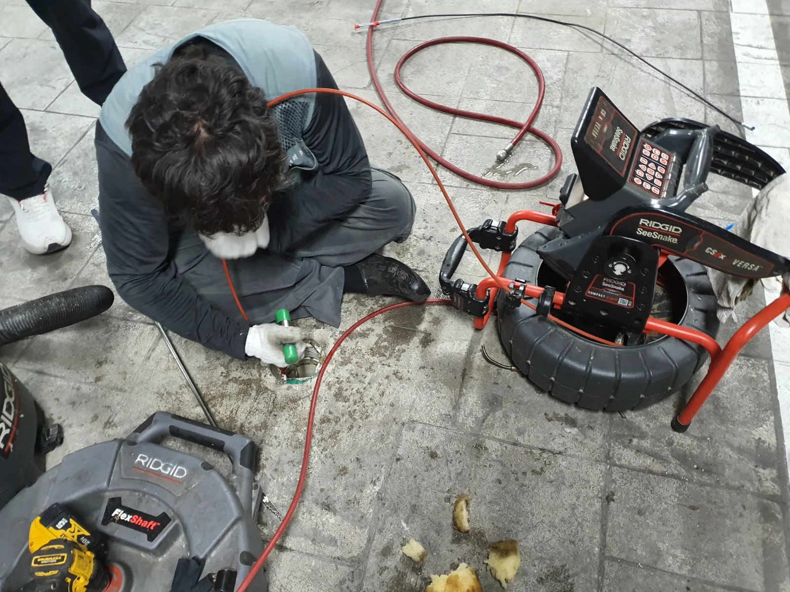
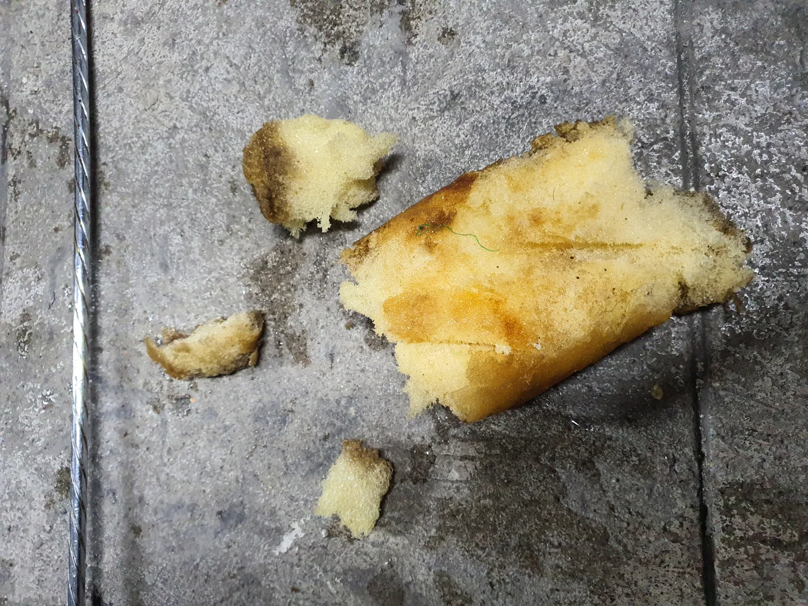

중구 필동 하수구막힘, 현장 도착 후 진단
중구 필동 하수구막힘 현장은 일반적인 생활 이물질로 발생한 단순 막힘과는 작업 난이도가 달랐습니다. 긴급한 막힘 요청에 대응해 전문 장비를 준비하고 신속하게 현장으로 출동했으며, 숙련 기술자가 먼저 배관 구조와 막힘 상태를 점검했습니다.
하수구막힘은 겉으로 나타나는 증상만으로 정확한 원인을 판단하기 어렵습니다. 신라건축설비는 무작정 관통 장비부터 밀어 넣는 방식이 아니라 RIDGID SeeSnake 배관 내시경으로 내부를 확인해 막힘 위치와 원인을 파악한 뒤 필요한 장비와 작업 방법을 결정했습니다.
내시경 점검 과정에서 배관 안쪽에 대형 스펀지가 꽉 끼어 있는 상태를 확인했습니다. 물티슈 등 다른 이물질도 함께 확인됐으며, 스펀지가 배관의 통수 공간을 막고 있어 단순한 한 번의 관통작업만으로 해결하기 어려운 상황이었습니다.
신라건축설비는 현장 상태와 필요한 작업 범위를 먼저 확인하고 적용할 작업 방법과 비용에 영향을 주는 작업 범위를 안내한 뒤 진행합니다. 처음부터 큰 작업을 일률적으로 권하기보다 실제 배관 상태를 근거로 필요한 공법을 선택해 불필요한 추가 작업을 줄이고 투명하게 작업하는 것을 중요하게 생각합니다.
1단계: 증상 확인과 필요한 장비 작업
배관 내시경으로 대형 스펀지가 걸려 있는 위치를 확인하면서 스프링 관통기와 RIDGID FlexShaft를 이용한 기계식 관통·제거 작업을 진행했습니다.
이번 현장의 핵심은 스펀지를 단순히 배관 안쪽으로 밀어내는 것이 아니라 밖으로 실제 회수하는 것이었습니다. 스펀지가 배관 안쪽에 강하게 걸려 있었기 때문에 한 번의 작업으로 빠지지 않았고, 내시경으로 위치와 상태를 확인하면서 조금씩 분리하고 꺼내는 과정을 반복했습니다.
실제로 배관에서 꺼낸 스펀지 조각에서도 상당한 크기의 이물질이 내부에 들어가 있었다는 사실을 확인할 수 있었습니다. 단순히 물이 지나갈 작은 공간만 만드는 데 그치지 않고 재차 막힘을 일으킬 수 있는 스펀지와 이물질을 최대한 제거하는 데 집중했습니다.

2단계: 원인 구간 처리와 정상 작동 확인
스프링 관통기와 플렉스샤프트 작업 이후에는 고압세척을 병행해 분리된 잔여 이물질과 배관 내부를 정리했습니다. 작업 중간에도 배관 내시경을 활용해 내부 상태를 확인하면서 필요한 구간에 장비를 반복 투입했습니다.
스펀지가 쉽게 빠지지 않아 제거와 내시경 확인, 관통, 샤프트 작업을 여러 차례 반복해야 했고 전체 작업에는 약 8시간이 소요됐습니다.
이번 필동 현장은 단순히 배관에 물길 하나를 만들어 통수만 시킨 작업이 아닙니다. 내시경으로 원인을 추적하고 대형 스펀지를 실제로 회수한 뒤 스프링 관통기, RIDGID FlexShaft, 고압세척 장비를 복합 운용해 배관 내부를 정리한 고난도 하수구막힘 작업이었습니다.

작업 결과와 재발 방지 안내
중구 필동 하수구막힘 현장은 약 8시간에 걸친 반복 작업을 통해 배관 내부에 꽉 끼어 있던 대형 스펀지와 함께 확인된 물티슈 등 이물질을 제거하고 막힘 구간을 정리했습니다.
스펀지나 물티슈처럼 물에 쉽게 풀어지지 않는 물질은 하수 배관으로 들어가면 굴곡이나 연결부에 걸릴 수 있습니다. 특히 부피가 큰 스펀지는 배관의 통수 공간 자체를 막고 다른 오염물까지 붙잡아 심각한 배관막힘으로 이어질 수 있으므로 배수구나 하수구로 유입되지 않도록 주의해야 합니다.
이번 사례처럼 일반적인 관통으로 쉽게 해결되지 않는 하수구막힘은 원인을 확인하지 않은 채 장비만 반복적으로 투입하기보다 배관 내시경으로 정확한 위치와 상태를 확인하고 관통, 샤프트, 고압세척 등 필요한 공법을 단계적으로 적용하는 것이 중요합니다.
고난도 배관 작업일수록 고객 입장에서는 작업 범위가 어디까지 커지는지, 비용이 어떻게 달라지는지가 걱정될 수 있습니다. 신라건축설비는 배관 상태를 먼저 확인하고 필요한 작업 방법과 범위, 비용에 영향을 주는 요소를 설명한 뒤 작업을 진행하며 실제 현장에 필요한 범위의 작업을 적용하는 투명한 작업 과정을 중요하게 생각합니다.
작업 후에도 시공 부위와 관련해 이상 증상이 나타날 경우 기존 작업 내용을 바탕으로 상태를 확인하고 필요한 사후 대응을 진행합니다. 진단과 시공뿐 아니라 작업 후 확인과 사후관리까지 책임 있게 대응하는 것이 신라건축설비의 기본 작업 원칙입니다.
하수구막힘은 갑작스러운 배수 불량이나 역류로 생활과 시설 이용에 큰 불편을 줄 수 있습니다. 신라건축설비는 긴급한 막힘 요청에 대응할 수 있도록 24시간 출동 체계를 운영하며, 중구 필동을 비롯한 서울 전 지역과 경기권 현장에 필요한 전문 장비를 준비해 신속하게 출동하고 있습니다.
신라건축설비는 변기막힘·싱크대막힘·하수구막힘을 전문적으로 해결하는 서울·경기권 배관 전문업체입니다. 배관 내시경검사부터 석션, 관통, RIDGID 샤프트, 고압세척까지 현장 원인에 맞는 전문 장비와 공법을 적용하며, 이번 중구 필동 현장처럼 일반적인 관통작업으로 해결하기 어려운 고난도 배관막힘에도 대응합니다.
또한 점검 과정에서 공용배관·메인 오수관 문제나 배관 파손 등이 확인될 경우 배관 보수·교체 및 대형 배관공사까지 연계해 자체 대응할 수 있습니다. 생활 속 막힘을 빠르고 전문적으로 해결하는 것을 중심으로, 복잡한 배관 문제와 대형 공사까지 한 번에 대응할 수 있는 것이 신라건축설비의 강점입니다.
최종 조치: RIDGID SeeSnake 배관 내시경으로 막힘 위치와 내부 상태를 확인하면서 스프링 관통기와 RIDGID FlexShaft를 이용해 배관에 꽉 끼어 있던 대형 스펀지를 조금씩 분리하고 회수했습니다. 이후 고압세척을 병행해 잔여 이물질과 배관 내부를 정리했으며, 약 8시간에 걸친 고난도 통수작업으로 막힘 구간을 해결했습니다.
현장 방문 전 확인하는 비용과 작업 범위
신라건축설비는 현장 증상과 배관 구조를 확인한 뒤 필요한 작업과 예상 비용을 안내합니다. 단순 관통으로 해결되는지, 배관내시경·석션·고압세척 또는 추가 장비가 필요한지는 현장 상태에 따라 달라집니다. 출장비와 야간 작업비, 추가 장비 비용이 발생할 수 있는 경우 작업 전에 먼저 설명하고 동의를 받은 범위에서 진행합니다.
업체를 선택할 때 확인할 사항
무조건적인 ‘0원’ 표현보다 실제 작업 범위, 추가 비용 조건, 사용 장비와 사후 대응 기준을 확인하는 것이 중요합니다. 해결되지 않았을 때의 비용 기준과 작업 후 동일 증상 발생 시 점검 범위를 사전에 문의해두면 불필요한 분쟁을 줄일 수 있습니다.
중구 하수구막힘 자주 묻는 질문
여러 배수구가 동시에 역류하면 공용배관 문제인가요?
하수 배관의 배수가 원활하지 않아 긴급한 점검과 통수작업이 필요한 상황이었습니다. 일반적인 단순 관통만으로는 해결하기 어려운 상태로, 배관 깊숙한 곳의 원인을 정확하게 확인하면서 작업해야 하는 고난도 하수구막힘 현장이었습니다.처럼 증상이 나타나더라도 원인은 현장마다 다를 수 있습니다. 장비와 배관 구조를 확인한 뒤 필요한 작업 범위를 안내합니다.
고압세척이 항상 필요한가요?
작업 전 증상과 현장 여건을 확인해 예상 범위와 비용을 먼저 안내합니다. 변기 탈거, 장비 추가 투입 또는 공용배관 작업이 필요한 경우 고객 동의 없이 임의로 진행하지 않습니다.
작업 전 추가 비용을 확인할 수 있나요?
완료 후 정상 작동을 함께 확인하고 작업 범위에 따른 사후 안내를 드립니다. 동일 증상이 반복되면 현장 기록을 기준으로 원인을 다시 점검합니다.
하수구막힘 서울·경기 출동지역
신라건축설비는 중구 필동 현장을 포함해 서울 25개 구와 경기도 31개 시·군의 배관 문제를 상담합니다. 현장 거리와 기사 배정 상황에 따라 출동 가능 여부를 먼저 안내드립니다.
서울 전 지역
강남구 · 강동구 · 강북구 · 강서구 · 관악구 · 광진구 · 구로구 · 금천구 · 노원구 · 도봉구 · 동대문구 · 동작구 · 마포구 · 서대문구 · 서초구 · 성동구 · 성북구 · 송파구 · 양천구 · 영등포구 · 용산구 · 은평구 · 종로구 · 중구 · 중랑구
경기도 주요 출동지역
수원시 · 용인시 · 고양시 · 화성시 · 성남시 · 부천시 · 남양주시 · 안산시 · 평택시 · 안양시 · 시흥시 · 파주시 · 김포시 · 의정부시 · 광주시 · 하남시 · 광명시 · 군포시 · 양주시 · 오산시 · 이천시 · 안성시 · 구리시 · 의왕시 · 포천시 · 양평군 · 여주시 · 동두천시 · 과천시 · 가평군 · 연천군